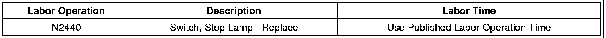

Lighting - Brake Lamps Turn Off After Stop/Pedal Applied
TECHNICALBulletin No.: 08-08-42-003A
Date: August 14, 2009
Subject: Stop Lamps Intermittently Turn Off After Coming to a Complete Stop While Still Having Pressure on Brake Pedal (Replace Stop Lamp Switch)
Models:
2007-2008 Cadillac Escalade, Escalade ESV, Escalade EXT
2007-2008 Chevrolet Avalanche, Silverado, Suburban, Tahoe
2007-2008 GMC Sierra, Yukon, Yukon Denali, Yukon XL, Yukon Denali XL
Supercede:
This bulletin is being revised to provide a new part number. Please discard Corporate Bulletin Number 08-08-42-003 (Section 08 - Body & Accessories).
Condition
Some customers may comment on the stop lamps turning off prior to the brake pedal reaching the fully released position. Some customers may also comment on the stop lamps turning off while having light pressure on the brake pedal.
Some customers with Integrated Trailer Brake Control (ITBC) may comment that the electronic trailer brakes disengage after the vehicle has come to a complete stop. This disengaging of the trailer brakes coincides with the stop lamps turning off.
Cause
This condition may be caused by not enough pressure being applied to the stop lamp switch to keep the brake lights on.
Correction
Technicians are to replace the stop lamp switch. The new stop lamp switch has a reduced internal spring apply force, which will allow the lamps to stay on with less applied brake force.
1. Refer to SI for Stop Lamp Switch replacement procedures.
2. Use the new Stop Lamp Switch, P/N 25981009.
Parts Information
Warranty Information

For vehicles repaired under warranty, use the table above.

Disclaimer